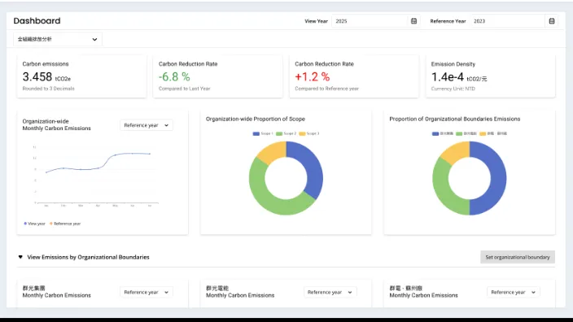
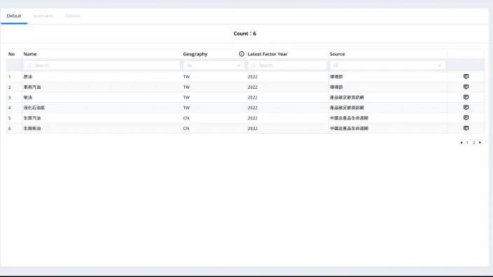
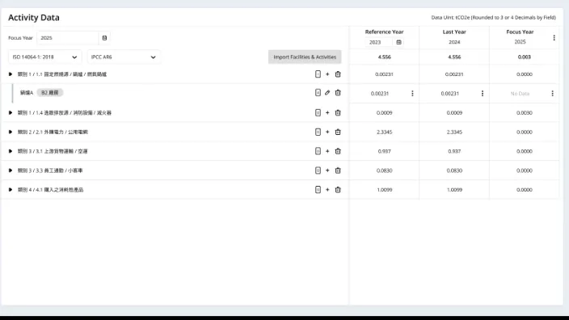
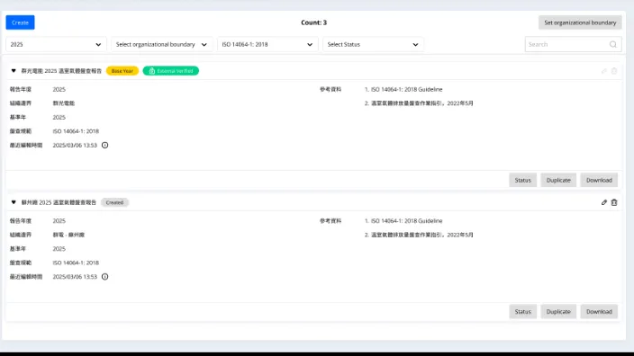

Role
需求蒐集／分析、專案主責
具 B2B 軟體、ERP、IoT 與碳管理產品經驗。從需求釐清、流程與資料設計，到跨國上線、問題管理與持續迭代， 專注把高複雜度的業務邏輯轉化為可開發、易使用的永續可營運性產品。 以下案例說明系統轉型、複雜功能設計、跨系統維運與 0→1 平台建置四種能力。
舊出貨系統長年與新平台並行，造成資料分歧與維運負擔。目標是讓舊系統安全退場，而非直接斷然關閉。 先弄清楚「使用者為什麼還在用舊系統」，把每個使用情境轉成新系統的短中長期 backlog，設計訓練與切換計畫。
套件（KIT）由多顆子料成套出貨及退貨，牽涉出貨批號搓合、成套卡控、庫存分配、挑批等邏輯， 又要適用 OBIA（OB in Advanced）情境。任一環節都可能造成數量不成套、庫存錯配或帳務失衡。 核心工作是把流程拆到跨系統的每一步，設計規格並預先思考例外情境。
主導橫跨前端 Portal、後端 SAP/EWM 的出貨系統維運，透過 API/RFC 跨系統串接與 Kafka 事件同步確保資料一致性； 建立每週問題追蹤機制（新增／解決／累積量、分類趨勢），並憑藉對系統間資料流動路徑的掌握，快速定位「並行覆蓋」「拆併單」等跨系統時序類問題。
| 議題分類 | 累積剩餘 | 進度說明 | 預計修正上線 |
|---|---|---|---|
| 程式並行覆蓋（含 EWM 狀態） | 3 | IT 修正與測試並行 | 分段上線中 |
| 出貨程式優化 | 1 | UAT 觀察中 | 本週 |
| 拆併單（本週新增） | 1 | 排查中 | 待評估 |
| 單據未還量 | 0 | 已解決 ✓ | 已上線 |
| Text 相關 | 0 | 已修正上線 ✓ | 已上線 |
面對新政策與碳盤查規範需求，主導領域研究、產品流程與資料架構，重新定義產品定位。目標不只是完成碳盤查， 而是讓企業能把活動數據、排放係數、計算結果與查證所需報告串成一條可追溯的作業鏈。



